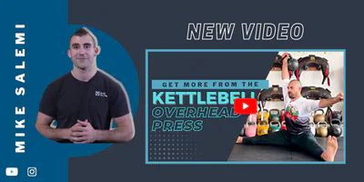

B716 · Get Better at Pressing
Hi {first_name},
A movement as fundamental as the press tends to get oversimplified and overlooked. As with any exercise, learning a few key points of technique will get you more benefit with less wear and tear.
Today’s video shows 2 variations of the press.
Variation 1 creates a stable lower body set up, so you can focus on the rack position and the proper finish position.
Variation 2 makes the movement a LOT more challenging!
Watch the video below and work these presses into your training.
 Also, what would you like to see from me week to week? If you’d like me to cover something in these weekly videos, hit reply and let me know.
Thank you and keep training intentionally, Mike Salemi
P.S. If you like the movements and coaching from these weekly videos, chances are you’ll love one of my Kettlebell Lifestyle programs. One is a full online course with tutorials for everything - great for people new to kettlebells and those with no trouble training on their own. The other is a weekly live class (the recording is available for 7 days if you can’t make it live). Money back guarantee on both because I want you to love it! Click for details on Kettlebell Lifestyle or Kettlebell Lifestyle LIVE classes. |